Un repère simple pour savoir où tu es, quoi faire et comment retrouver les étapes importantes.
Parcours · Installer les bases IA : Claude Code, Codex et n8nÀ faire · Suivre la séance puis refaire seulNavigation · Boutons 01, 02, 03... pour retrouver une étape
Comparaison terrain
Codex ou Claude Code ?
Dans cette séance, on va voir comment bien utiliser Codex. On va comprendre à quoi il sert, comment l’installer, comment lui demander un travail propre, puis quelle est la vraie différence avec Claude Code. Le but est simple : savoir quel outil lancer quand il faut créer, corriger, relire ou livrer un projet.
80
sections guidées
33+
visuels d’interface
1
exemple qui se suit
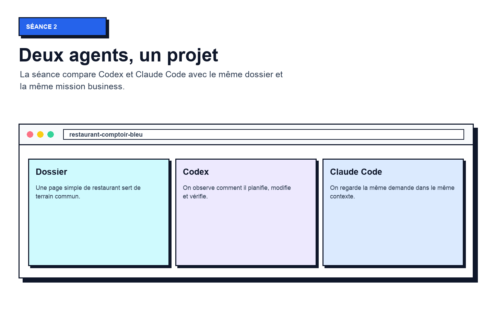
Même projet, même brief, même contrôle.
Le parcours de la séance
On commence par les bases : c’est quoi Codex, ce qu’il peut faire dans un dossier, et pourquoi ce n’est pas exactement la même chose que Claude Code. Ensuite, on utilise le même exemple pour comparer les deux outils sans théorie inutile.
Brief commun
Brief maître :
Dans la page du Comptoir Bleu, ajoute une formule midi.
Garde fond blanc, accents bleu/violet, bouton Réserver visible.
Vérifie mobile et résume les fichiers modifiés.
Cette première partie pose les bases : ce qu’est Codex, à quoi il sert, et pourquoi on ne l’utilise pas exactement comme Claude Code.
Ce qui se passe
Codex est l’agent de code d’OpenAI. Il sert à travailler sur des projets : comprendre un dossier, proposer un plan, modifier des fichiers, relire un diff, préparer une livraison ou lancer une tâche depuis plusieurs surfaces.
Action terrain
Retenez une définition simple : `Codex m’aide à faire avancer un projet de code avec des actions vérifiables.`
Preuve attendue
Vous savez expliquer Codex en une phrase sans parler de magie ou d’outil vague.
Tip simple
Si la définition ne parle pas de projet, de fichiers ou de vérification, elle reste trop floue.
Visuel 02 · Comprendre · À quoi ça sert dans un vrai travail
À quoi ça sert dans un vrai travail
Codex devient utile quand une tâche doit produire quelque chose : corriger une page, relire un bug, créer une branche, préparer une checklist, analyser une erreur ou organiser un plan d’action. Il ne sert pas seulement à discuter.
Le geste à faire
Prenez un exemple concret : `corriger le bouton Réserver`, `relire un fichier`, `préparer une PR`, `expliquer un bug`.
Côté Codex
Codex est l’outil principal de cette étape. Il sert à comprendre, organiser, modifier ou relire un projet selon le contexte.
Côté Claude Code
Claude Code sert ici de repère de comparaison. Il a déjà été vu avant, donc on ne refait pas son installation.
L’exemple contient une action et un résultat observable.
03ComprendreActe 1 - Comprendre Codex
Bloc pratique à copier
Différence entre ChatGPT et Codex
ChatGPT aide surtout à réfléchir et écrire. Codex va plus loin dans un contexte de travail : il peut se connecter à un projet, suivre des règles, lire des fichiers, proposer des changements et travailler avec des outils selon les accès activés.
Côté Codex
Codex est l’outil principal de cette étape. Il sert à comprendre, organiser, modifier ou relire un projet selon le contexte.
Côté Claude Code
Claude Code sert ici de repère de comparaison. Il a déjà été vu avant, donc on ne refait pas son installation.
Bloc pratique
Écrivez deux colonnes : `ChatGPT = expliquer`, `Codex = agir dans un projet`.
Vérification :
Vous ne demandez pas à ChatGPT seul de faire ce que Codex doit faire avec un dossier.
Tip :
Quand il faut modifier un fichier ou relire un diff, pensez Codex plutôt qu’un simple chat.
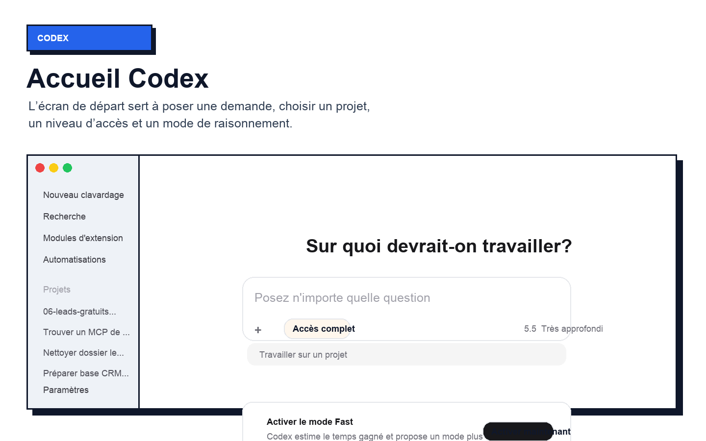
Visuel 03 · Comprendre · Différence entre ChatGPT et Codex
04ComprendreActe 1 - Comprendre Codex
Comprendre
Différence entre app et terminal
Codex existe dans l’interface et dans le terminal. L’app est pratique pour piloter des projets, plugiciels, automatisations et tâches visuelles. Le terminal est pratique quand vous êtes déjà dans un dossier local et que vous voulez une commande directe.
Action
Associez chaque surface à un usage : app pour organiser et piloter, terminal pour travailler vite dans un dossier.
Preuve
Vous savez pourquoi les deux surfaces existent au lieu de les confondre.
Codex
Codex est l’outil principal de cette étape. Il sert à comprendre, organiser, modifier ou relire un projet selon le contexte.
Claude Code
Claude Code sert ici de repère de comparaison. Il a déjà été vu avant, donc on ne refait pas son installation.
Tip
Le bon choix dépend surtout d’où vous travaillez déjà : navigateur/app ou terminal.
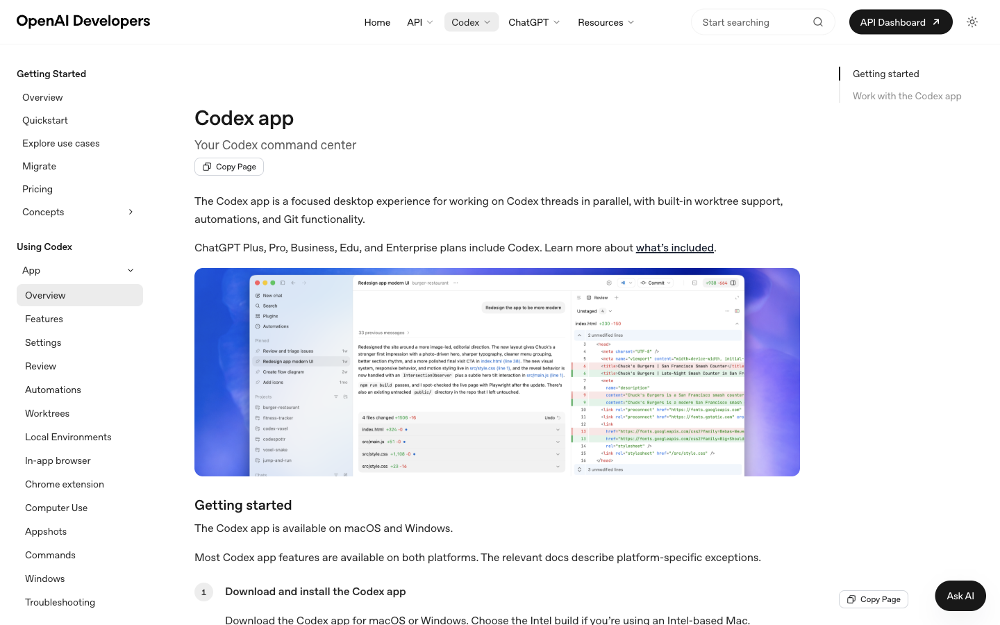
Visuel 04 · Comprendre · Différence entre app et terminal
05ComprendreActe 1 - Comprendre Codex
Ce que Codex peut faire
Codex peut lire un dossier, proposer un plan, modifier des fichiers, expliquer une erreur, relire un changement, utiliser des plugiciels, lancer des automatisations et travailler avec un dépôt selon la configuration.
Action terrain
Listez trois choses que vous voulez vraiment lui demander cette semaine.
À vérifier
Chaque demande est reliée à un fichier, un projet ou une tâche de travail.
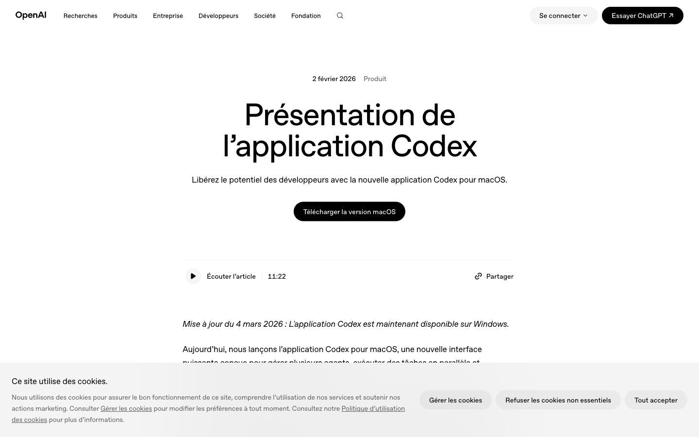
Visuel 05 · Comprendre · Ce que Codex peut faire
Côté Codex
Codex est l’outil principal de cette étape. Il sert à comprendre, organiser, modifier ou relire un projet selon le contexte.
Côté Claude Code
Claude Code sert ici de repère de comparaison. Il a déjà été vu avant, donc on ne refait pas son installation.
Plus la tâche est concrète, plus Codex a de chances de vous aider proprement.
06ComprendreActe 1 - Comprendre Codex
Ce que Codex ne doit pas décider seul
Codex peut aller vite, mais il ne doit pas décider seul d’un changement large, d’un accès sensible, d’une publication ou d’une suppression. Le contrôle reste humain : vous lisez, vous vérifiez, puis vous acceptez.
Action + preuve
Ajoutez une règle personnelle : `pas de gros changement sans plan court avant action`.
Vous savez refuser ou réduire une proposition trop large.
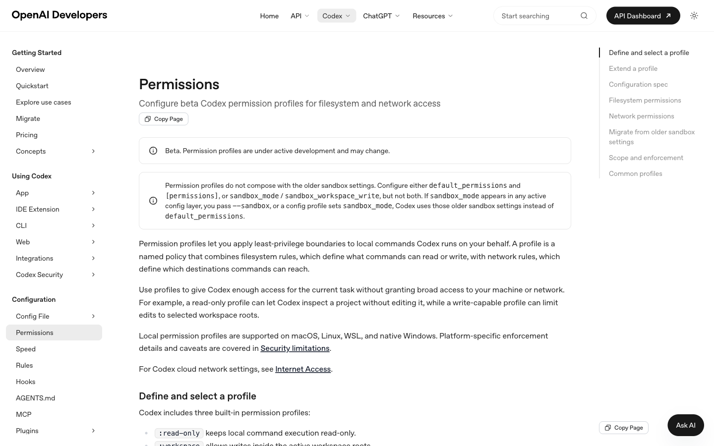
Visuel 06 · Comprendre · Ce que Codex ne doit pas décider seul
Codex
Codex est l’outil principal de cette étape. Il sert à comprendre, organiser, modifier ou relire un projet selon le contexte.
Claude Code
Claude Code sert ici de repère de comparaison. Il a déjà été vu avant, donc on ne refait pas son installation.
Tip terrain
Un agent rapide sans limite peut faire perdre du temps. La limite fait partie du travail.
07ComprendreActe 1 - Comprendre Codex
Pourquoi Codex aide sur un projet
Cette première partie pose les bases : ce qu’est Codex, à quoi il sert, et pourquoi on ne l’utilise pas exactement comme Claude Code.
Ce qui se passe
Un projet contient du contexte : fichiers, règles, erreurs, historique et objectifs. Codex est utile parce qu’il peut travailler avec ce contexte au lieu de répondre seulement à une question isolée.
Action terrain
Choisissez un projet simple pour la séance : une page existante, un mini-site ou un dossier de test.
Preuve attendue
Le projet est assez petit pour être compris et assez concret pour être vérifié.
Tip simple
Un petit projet propre vaut mieux qu’un gros dossier confus pour apprendre.
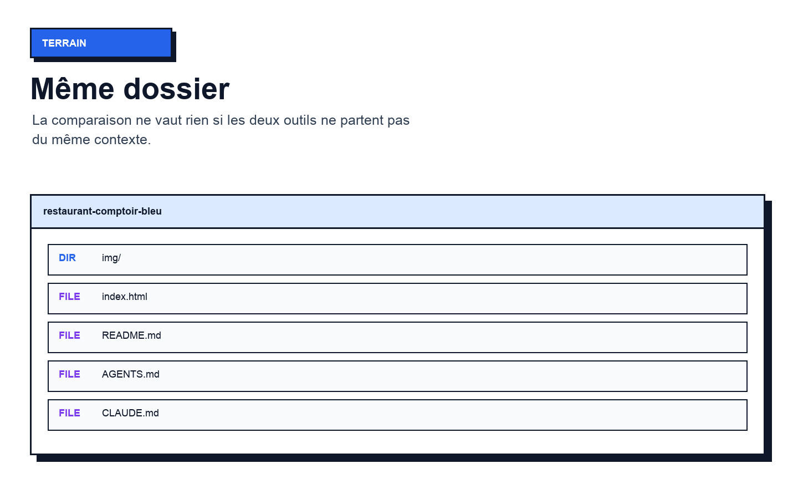
Visuel 07 · Comprendre · Pourquoi Codex aide sur un projet
08ComprendreActe 1 - Comprendre Codex
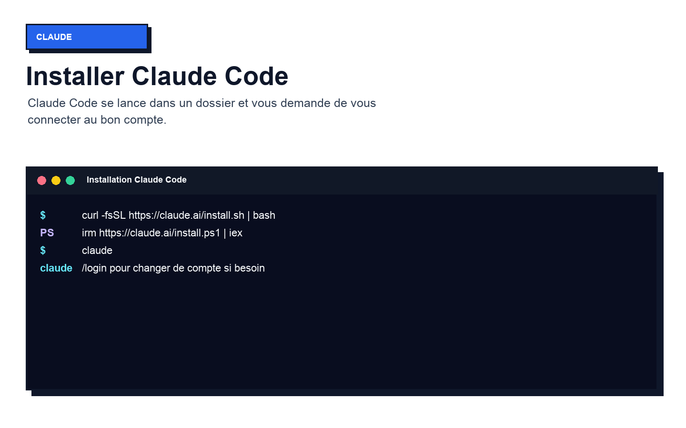
Visuel 08 · Comprendre · Claude Code comme repère
Claude Code comme repère
Claude Code a déjà été vu avant. Dans cette séance, il ne sert pas à refaire l’installation. Il sert seulement de repère : même famille d’outils, mais surface, habitudes et intégrations différentes.
Le geste à faire
Gardez une phrase simple : `Claude Code = terminal Anthropic ; Codex = agent OpenAI avec app, CLI, cloud et plugiciels`.
Côté Codex
Codex est l’outil principal de cette étape. Il sert à comprendre, organiser, modifier ou relire un projet selon le contexte.
Côté Claude Code
Claude Code sert ici de repère de comparaison. Il a déjà été vu avant, donc on ne refait pas son installation.
La comparaison reste courte et ne remplace pas l’apprentissage de Codex.
09ComprendreActe 1 - Comprendre Codex
Bloc pratique à copier
Le fil rouge de la séance
Le fil rouge est simple : apprendre Codex assez bien pour savoir quelle surface utiliser. On part de l’interface, on passe par le terminal, puis on voit les plugiciels, les automatisations et la comparaison finale.
Côté Codex
Codex est l’outil principal de cette étape. Il sert à comprendre, organiser, modifier ou relire un projet selon le contexte.
Côté Claude Code
Claude Code sert ici de repère de comparaison. Il a déjà été vu avant, donc on ne refait pas son installation.
Bloc pratique
Gardez le plan sous les yeux. Chaque acte répond à une question précise.
Vérification :
Vous savez pourquoi chaque partie arrive dans cet ordre.
Tip :
Si une section semble abstraite, rattachez-la à cette question : où est-ce que Codex travaille ?
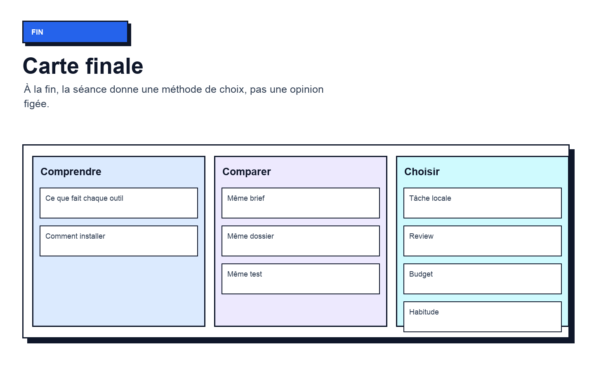
Visuel 09 · Comprendre · Le fil rouge de la séance
10ComprendreActe 1 - Comprendre Codex
Comprendre
La méthode à suivre
La méthode restera toujours la même : comprendre la surface, cadrer la demande, vérifier les accès, lire la proposition, contrôler le résultat, puis résumer. Cette boucle évite de partir dans tous les sens.
La boucle est claire avant de passer à l’interface.
Codex
Codex est l’outil principal de cette étape. Il sert à comprendre, organiser, modifier ou relire un projet selon le contexte.
Claude Code
Claude Code sert ici de repère de comparaison. Il a déjà été vu avant, donc on ne refait pas son installation.
Tip
Une bonne méthode simple bat une longue liste de fonctionnalités apprises sans ordre.
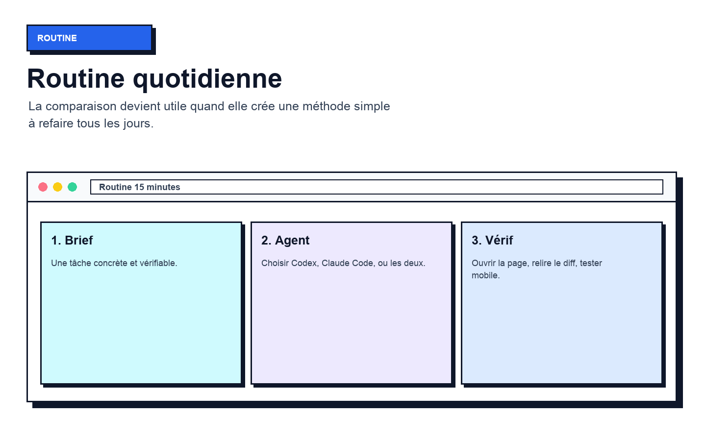
Visuel 10 · Comprendre · La méthode à suivre
11InterfaceActe 2 - Découvrir l’interface Codex
L’écran d’accueil
L’accueil Codex sert à démarrer une demande. On y trouve la zone de message, le choix de projet, le niveau d’accès et le modèle. C’est le point de départ pour comprendre comment Codex va travailler.
Action terrain
Repérez les quatre zones : message, accès, modèle, projet.
À vérifier
Vous savez où poser une demande et où regarder le contexte actif.
Visuel 11 · Interface · L’écran d’accueil
Côté Codex
Codex est l’outil principal de cette étape. Il sert à comprendre, organiser, modifier ou relire un projet selon le contexte.
Côté Claude Code
Claude Code sert ici de repère de comparaison. Il a déjà été vu avant, donc on ne refait pas son installation.
Avant d’écrire, regardez toujours si un projet est sélectionné ou non.
12InterfaceActe 2 - Découvrir l’interface Codex
La zone de message
La zone de message reçoit votre demande. Une bonne demande ne dit pas seulement `fais mieux`. Elle donne le contexte, l’objectif, les limites et la preuve attendue.
Action + preuve
Préparez une demande courte : `Lis ce projet et explique ce qu’il contient. Ne modifie rien.`
Codex répond sans partir directement dans une modification.
Visuel 12 · Interface · La zone de message
Codex
Codex est l’outil principal de cette étape. Il sert à comprendre, organiser, modifier ou relire un projet selon le contexte.
Claude Code
Claude Code sert ici de repère de comparaison. Il a déjà été vu avant, donc on ne refait pas son installation.
Tip terrain
La première demande doit souvent être une lecture, pas une action.
13InterfaceActe 2 - Découvrir l’interface Codex
Le choix du modèle
Cette partie explique l’écran Codex : accueil, message, projet, modèle, accès, mode de raisonnement, historique et paramètres.
Ce qui se passe
Le modèle indique le niveau de raisonnement utilisé. Un modèle plus approfondi peut être utile pour une tâche complexe, mais il peut aussi être plus lent. Le choix doit suivre la difficulté de la tâche.
Action terrain
Pour une demande simple, gardez un mode normal. Pour une analyse large, utilisez un mode plus approfondi.
Preuve attendue
Le modèle choisi correspond au niveau de difficulté réel.
Tip simple
Ne mettez pas le mode le plus lourd par réflexe. Commencez simple quand la tâche est simple.
Visuel 13 · Interface · Le choix du modèle
14InterfaceActe 2 - Découvrir l’interface Codex
Visuel 14 · Interface · Le mode très approfondi
Le mode très approfondi
Le mode très approfondi sert quand il faut réfléchir longtemps : architecture, bug difficile, refonte risquée, comparaison de solutions. Il n’est pas nécessaire pour renommer un bouton ou relire un petit texte.
Le geste à faire
Posez-vous la question : `est-ce que cette tâche demande une vraie réflexion ou seulement une exécution propre ?`
Côté Codex
Codex est l’outil principal de cette étape. Il sert à comprendre, organiser, modifier ou relire un projet selon le contexte.
Côté Claude Code
Claude Code sert ici de repère de comparaison. Il a déjà été vu avant, donc on ne refait pas son installation.
Le mode choisi ne ralentit pas inutilement le travail.
15InterfaceActe 2 - Découvrir l’interface Codex
Bloc pratique à copier
Le mode Fast
Le mode Fast vise la vitesse. Il peut aider pour des tâches courtes, mais il ne remplace pas la vérification. Plus la tâche est sensible, plus vous devez lire le résultat avant d’accepter.
Côté Codex
Codex est l’outil principal de cette étape. Il sert à comprendre, organiser, modifier ou relire un projet selon le contexte.
Côté Claude Code
Claude Code sert ici de repère de comparaison. Il a déjà été vu avant, donc on ne refait pas son installation.
Bloc pratique
Utilisez Fast seulement sur une action claire et peu risquée.
Vérification :
Vous savez quand aller vite et quand ralentir.
Tip :
Fast sert à gagner du temps, pas à sauter la relecture.
Visuel 15 · Interface · Le mode Fast
16InterfaceActe 2 - Découvrir l’interface Codex
Interface
Le niveau d’accès
Le niveau d’accès dit ce que Codex peut faire. C’est une partie très importante : lire, modifier, utiliser des outils, accéder à des données ou lancer des actions. Un accès trop large sans cadre peut créer des surprises.
Action
Avant de lancer une tâche, vérifiez le niveau d’accès affiché.
Preuve
Vous savez ce que Codex est autorisé à faire dans cette session.
Codex
Codex est l’outil principal de cette étape. Il sert à comprendre, organiser, modifier ou relire un projet selon le contexte.
Claude Code
Claude Code sert ici de repère de comparaison. Il a déjà été vu avant, donc on ne refait pas son installation.
Tip
Si vous ne comprenez pas un accès, baissez le niveau ou demandez une explication.
Visuel 16 · Interface · Le niveau d’accès
17InterfaceActe 2 - Découvrir l’interface Codex
Travailler sur un projet
Le bouton de projet rattache Codex à un contexte. Sans projet, Codex peut répondre de manière générale. Avec un projet, il peut travailler avec des fichiers, des règles et un historique.
Action terrain
Sélectionnez un projet seulement si vous voulez que Codex tienne compte de ce dossier.
À vérifier
Le projet affiché correspond bien au travail en cours.
Visuel 17 · Interface · Travailler sur un projet
Côté Codex
Codex est l’outil principal de cette étape. Il sert à comprendre, organiser, modifier ou relire un projet selon le contexte.
Côté Claude Code
Claude Code sert ici de repère de comparaison. Il a déjà été vu avant, donc on ne refait pas son installation.
Le mauvais projet est une source classique d’erreurs.
18InterfaceActe 2 - Découvrir l’interface Codex
Les projets dans la sidebar
La barre latérale montre des projets et des conversations précédentes. Elle sert à retrouver le bon contexte. Mais attention : un ancien projet peut garder une intention qui ne correspond plus à la tâche actuelle.
Action + preuve
Lisez le nom du projet avant de reprendre une conversation.
Vous ne reprenez pas une ancienne session par accident.
Visuel 18 · Interface · Les projets dans la sidebar
Codex
Codex est l’outil principal de cette étape. Il sert à comprendre, organiser, modifier ou relire un projet selon le contexte.
Claude Code
Claude Code sert ici de repère de comparaison. Il a déjà été vu avant, donc on ne refait pas son installation.
Tip terrain
Si la session est confuse, ouvrez une nouvelle conversation dans le bon projet.
19InterfaceActe 2 - Découvrir l’interface Codex
Les clavardages précédents
Cette partie explique l’écran Codex : accueil, message, projet, modèle, accès, mode de raisonnement, historique et paramètres.
Ce qui se passe
Les anciens clavardages peuvent servir d’historique, mais ils peuvent aussi vous enfermer dans un vieux contexte. Pour une nouvelle tâche importante, il vaut mieux repartir proprement avec une demande claire.
Action terrain
Décidez si vous reprenez un ancien clavardage ou si vous partez d’un nouveau.
Preuve attendue
La conversation utilisée correspond vraiment à la tâche du moment.
Tip simple
Un ancien fil n’est utile que si son contexte est encore bon.
Visuel 19 · Interface · Les clavardages précédents
20InterfaceActe 2 - Découvrir l’interface Codex
Visuel 20 · Interface · Les paramètres Codex
Les paramètres Codex
Les paramètres servent à gérer les préférences, les plugiciels, les accès et les habitudes de travail. On ne change pas tout dès le début. On observe d’abord ce qui est activé.
Le geste à faire
Ouvrez les paramètres et repérez les zones liées aux accès, plugiciels et projets.
Côté Codex
Codex est l’outil principal de cette étape. Il sert à comprendre, organiser, modifier ou relire un projet selon le contexte.
Côté Claude Code
Claude Code sert ici de repère de comparaison. Il a déjà été vu avant, donc on ne refait pas son installation.
Vous savez où revenir quand un comportement Codex vous surprend.
21TerminalActe 3 - Installer Codex en terminal
Bloc pratique à copier
Pourquoi utiliser le terminal
Le terminal est utile quand vous travaillez déjà dans un dossier local. Vous pouvez lancer Codex depuis le projet, lui demander de lire les fichiers, proposer un diff et exécuter certaines commandes avec validation.
Côté Codex
Codex est l’outil principal de cette étape. Il sert à comprendre, organiser, modifier ou relire un projet selon le contexte.
Côté Claude Code
Claude Code sert ici de repère de comparaison. Il a déjà été vu avant, donc on ne refait pas son installation.
Bloc pratique
Retenez : app pour piloter, terminal pour agir vite dans un dossier local.
Vérification :
Vous savez pourquoi le CLI existe même si l’app Codex existe aussi.
Tip :
Le terminal n’est pas obligatoire pour tout, mais il est très efficace dans un dossier de code.
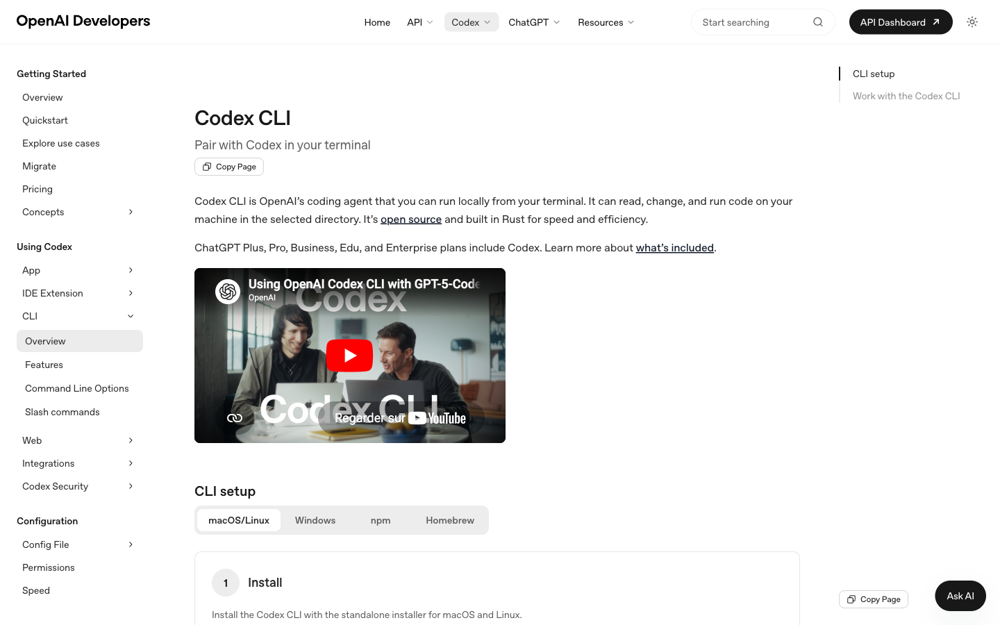
Visuel 21 · Terminal · Pourquoi utiliser le terminal
22TerminalActe 3 - Installer Codex en terminal
Terminal
Préparer les prérequis
Avant d’installer, il faut savoir sur quel système vous travaillez : macOS, Windows ou Linux. Le Quickstart officiel indique que le CLI est supporté sur ces trois environnements.
Action
Notez votre système et ouvrez le terminal adapté.
Preuve
Vous choisissez la bonne commande pour votre système.
Codex
Codex est l’outil principal de cette étape. Il sert à comprendre, organiser, modifier ou relire un projet selon le contexte.
Claude Code
Claude Code sert ici de repère de comparaison. Il a déjà été vu avant, donc on ne refait pas son installation.
Tip
Beaucoup d’erreurs viennent d’une commande copiée pour le mauvais système.
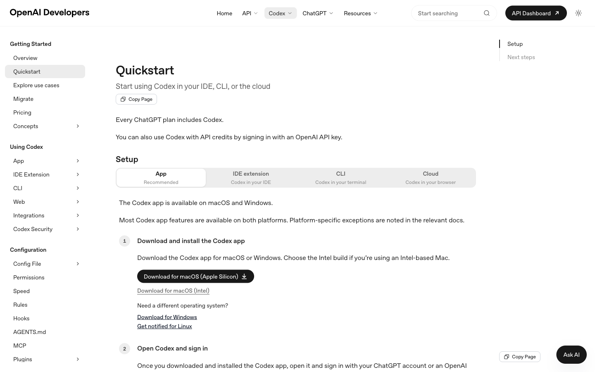
Visuel 22 · Terminal · Préparer les prérequis
23TerminalActe 3 - Installer Codex en terminal
Installer Codex CLI
La documentation officielle donne plusieurs routes : installateur autonome, PowerShell Windows, npm ou Homebrew. La commande à utiliser dépend de votre machine et de votre préférence.
La commande d’installation vient de la page officielle, pas d’une vieille capture.
Visuel 23 · Terminal · Installer Codex CLI
Côté Codex
Codex est l’outil principal de cette étape. Il sert à comprendre, organiser, modifier ou relire un projet selon le contexte.
Côté Claude Code
Claude Code sert ici de repère de comparaison. Il a déjà été vu avant, donc on ne refait pas son installation.
Vérifiez toujours la commande officielle avant une nouvelle installation.
24TerminalActe 3 - Installer Codex en terminal
Vérifier que codex répond
Une installation n’est pas validée parce que la commande a semblé se terminer. Elle est validée quand `codex` répond dans le terminal. C’est la preuve minimale.
Action + preuve
Tapez `codex --help` ou lancez simplement `codex` selon votre cas.
Le terminal reconnaît la commande Codex.
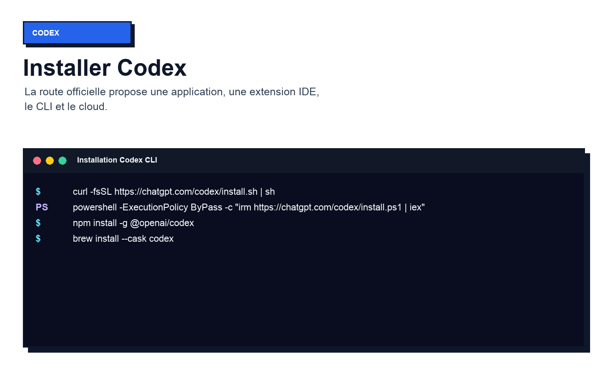
Visuel 24 · Terminal · Vérifier que codex répond
Codex
Codex est l’outil principal de cette étape. Il sert à comprendre, organiser, modifier ou relire un projet selon le contexte.
Claude Code
Claude Code sert ici de repère de comparaison. Il a déjà été vu avant, donc on ne refait pas son installation.
Tip terrain
Si `codex` ne répond pas, ne passez pas à la suite. Corrigez d’abord l’installation.
25TerminalActe 3 - Installer Codex en terminal
Se connecter au compte
Cette partie explique pourquoi et comment utiliser Codex CLI dans un dossier local, avec les commandes officielles et les bons contrôles.
Ce qui se passe
Au premier lancement, Codex demande une connexion avec un compte ChatGPT ou une clé API selon le mode. Pour la plupart des usages de cette séance, la connexion ChatGPT est le chemin le plus simple.
Action terrain
Lancez `codex` puis suivez la connexion proposée.
Preuve attendue
La session indique que vous êtes connecté et prêt à travailler.
Tip simple
Ne collez jamais une clé API dans un fichier public ou dans une capture destinée à être partagée.
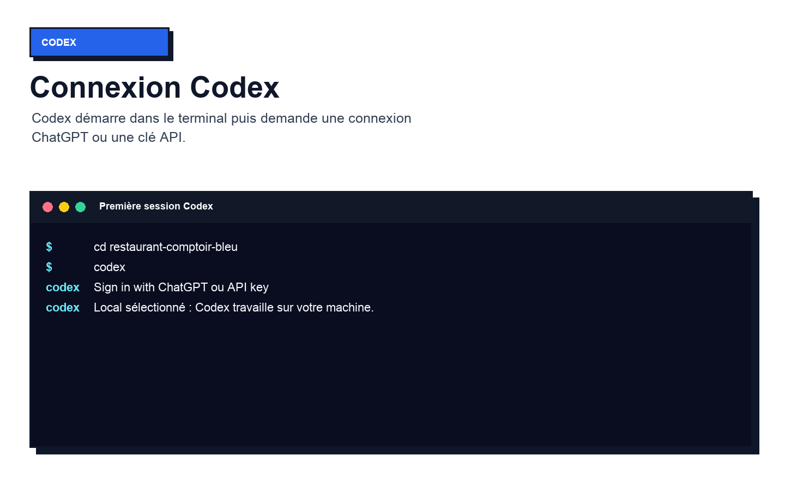
Visuel 25 · Terminal · Se connecter au compte
26TerminalActe 3 - Installer Codex en terminal
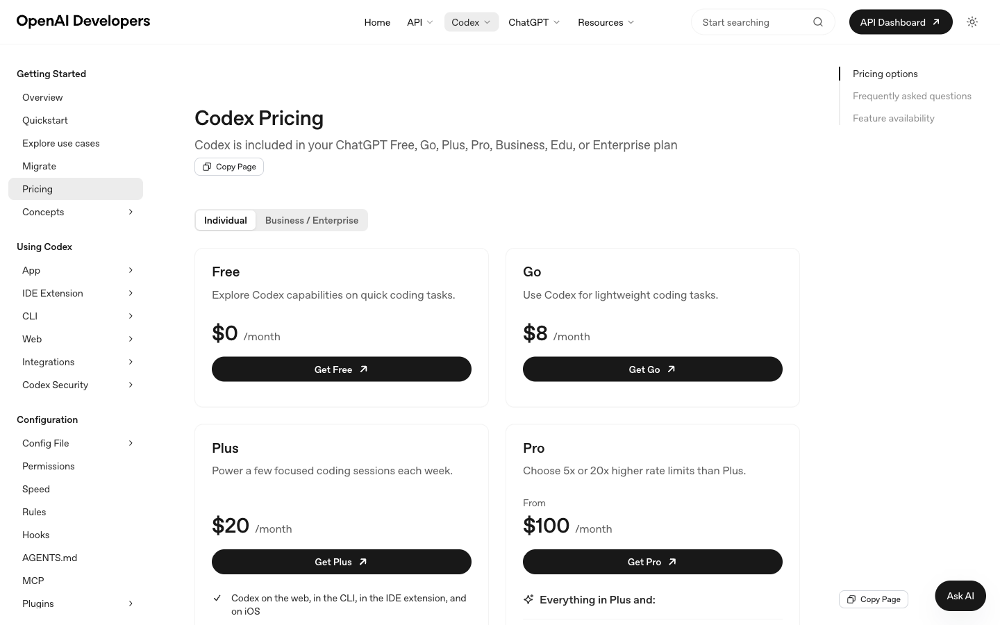
Visuel 26 · Terminal · Compte ChatGPT ou API
Compte ChatGPT ou API
Compte ChatGPT et API ne sont pas la même chose. Le compte sert à utiliser Codex avec votre abonnement. L’API sert plutôt quand un script ou un système appelle OpenAI avec une clé.
Le geste à faire
Notez quel mode vous utilisez : compte ChatGPT ou clé API.
Côté Codex
Codex est l’outil principal de cette étape. Il sert à comprendre, organiser, modifier ou relire un projet selon le contexte.
Côté Claude Code
Claude Code sert ici de repère de comparaison. Il a déjà été vu avant, donc on ne refait pas son installation.
Vous savez d’où viendra l’usage et le coût éventuel.
27TerminalActe 3 - Installer Codex en terminal
Bloc pratique à copier
Ouvrir le bon dossier
Codex CLI travaille dans le dossier courant. Si vous lancez Codex au mauvais endroit, il peut analyser ou modifier les mauvais fichiers. Le chemin du terminal passe donc avant le prompt.
Côté Codex
Codex est l’outil principal de cette étape. Il sert à comprendre, organiser, modifier ou relire un projet selon le contexte.
Côté Claude Code
Claude Code sert ici de repère de comparaison. Il a déjà été vu avant, donc on ne refait pas son installation.
Bloc pratique
Dans le terminal : `cd chemin/vers/votre-projet`, puis vérifiez avec `pwd`.
Vérification :
Le dossier affiché est bien celui du projet.
Tip :
Avant chaque session terminal, vérifiez le nom du dossier.
Une fois dans le bon dossier, `codex` démarre la session. La première demande doit être prudente : comprendre sans modifier. Cela confirme que Codex voit le bon contexte.
Action
Demandez : `Explique ce projet en 6 lignes. Ne modifie aucun fichier.`
Preuve
Codex décrit le projet sans créer ni modifier.
Codex
Codex est l’outil principal de cette étape. Il sert à comprendre, organiser, modifier ou relire un projet selon le contexte.
Claude Code
Claude Code sert ici de repère de comparaison. Il a déjà été vu avant, donc on ne refait pas son installation.
Tip
Première demande : observer. Deuxième demande : agir.
Visuel 28 · Terminal · Lancer Codex dans un projet
29TerminalActe 3 - Installer Codex en terminal
Premier diagnostic si ça bloque
Si Codex ne se lance pas, ne multipliez pas les commandes. Regardez le message exact, le système, le mode d’installation et le chemin du terminal. Une erreur exacte permet d’aller plus vite.
Action terrain
Copiez le message d’erreur complet et cherchez la cause : installation, connexion, permissions ou chemin.
À vérifier
Vous avez une piste claire au lieu d’un dépannage au hasard.
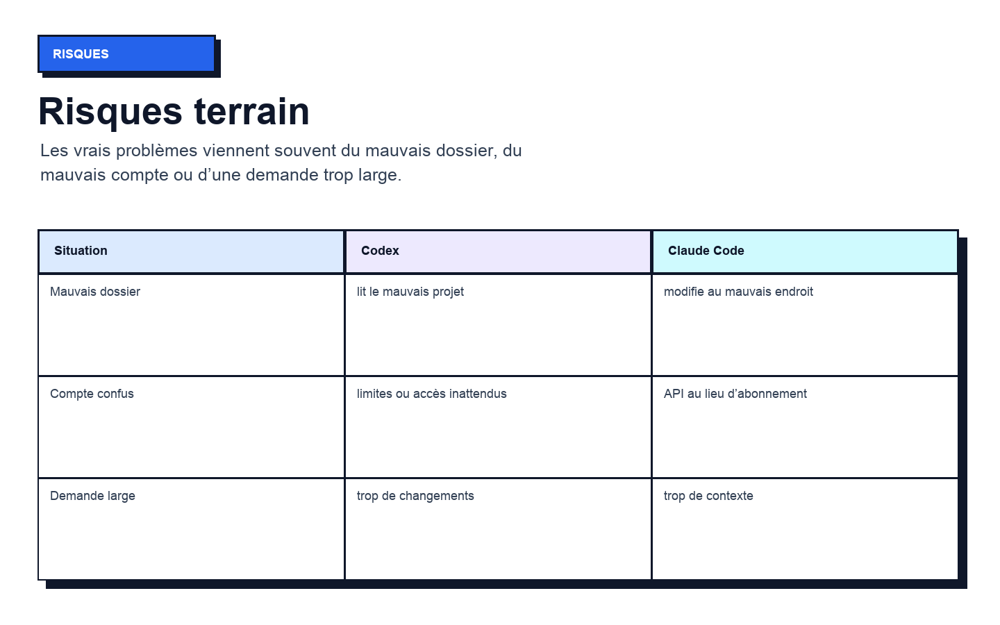
Visuel 29 · Terminal · Premier diagnostic si ça bloque
Côté Codex
Codex est l’outil principal de cette étape. Il sert à comprendre, organiser, modifier ou relire un projet selon le contexte.
Côté Claude Code
Claude Code sert ici de repère de comparaison. Il a déjà été vu avant, donc on ne refait pas son installation.
Un message d’erreur complet vaut mieux qu’une phrase approximative.
30TerminalActe 3 - Installer Codex en terminal
Checkpoint Git avant action
Codex peut modifier des fichiers. La doc recommande de créer des checkpoints Git pour revenir en arrière. Même sur un petit projet, ce réflexe protège votre travail.
Action + preuve
Avant une vraie modification : `git status`, puis commit ou branche de test si besoin.
Vous pouvez revenir à l’état initial si Codex change trop de choses.
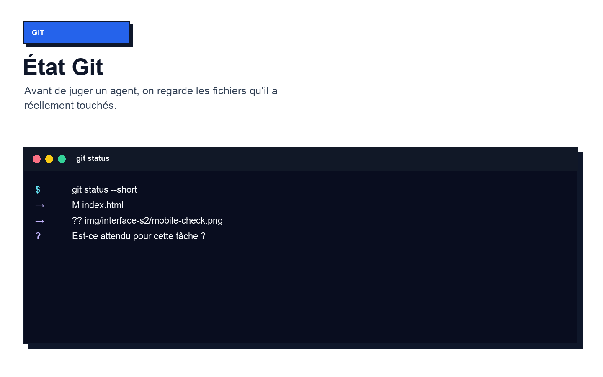
Visuel 30 · Terminal · Checkpoint Git avant action
Codex
Codex est l’outil principal de cette étape. Il sert à comprendre, organiser, modifier ou relire un projet selon le contexte.
Claude Code
Claude Code sert ici de repère de comparaison. Il a déjà été vu avant, donc on ne refait pas son installation.
Tip terrain
Le retour arrière prévu rend l’expérimentation beaucoup plus calme.
31CLIActe 4 - Bien utiliser Codex CLI
Demander un plan avant action
Cette partie montre comment parler au CLI : plan, lecture, mission précise, diff, commandes, tests, Git et résumé.
Ce qui se passe
Quand la tâche peut toucher plusieurs fichiers, demandez un plan avant modification. Le plan vous permet de refuser une direction trop large avant que le diff existe.
Action terrain
Demandez : `Propose un plan en 5 étapes. Ne modifie rien pour l’instant.`
Preuve attendue
Le plan annonce les fichiers et les contrôles prévus.
Tip simple
Plan court d’abord, modification ensuite.
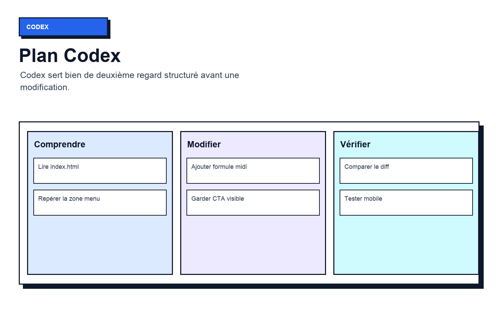
Visuel 31 · CLI · Demander un plan avant action
32CLIActe 4 - Bien utiliser Codex CLI
Visuel 32 · CLI · Demander une lecture du dossier
Demander une lecture du dossier
Une lecture du dossier sert à vérifier que Codex comprend le projet. Cette étape est utile au début, après une longue pause ou quand le dossier vient d’être récupéré.
Le geste à faire
Demandez : `Liste les fichiers importants et explique leur rôle en une phrase.`
Côté Codex
Codex est l’outil principal de cette étape. Il sert à comprendre, organiser, modifier ou relire un projet selon le contexte.
Côté Claude Code
Claude Code sert ici de repère de comparaison. Il a déjà été vu avant, donc on ne refait pas son installation.
Vous savez ce que Codex a compris du projet.
33CLIActe 4 - Bien utiliser Codex CLI
Bloc pratique à copier
Donner une mission précise
Une mission précise contient l’action, la zone, les limites et la preuve. Exemple : `corrige le bouton Réserver dans index.html, sans toucher au reste, puis résume le diff`.
Côté Codex
Codex est l’outil principal de cette étape. Il sert à comprendre, organiser, modifier ou relire un projet selon le contexte.
Côté Claude Code
Claude Code sert ici de repère de comparaison. Il a déjà été vu avant, donc on ne refait pas son installation.
Bloc pratique
Transformez une demande vague en demande précise avant de l’envoyer.
Vérification :
La demande peut être vérifiée sans interprétation.
Tip :
Une phrase précise évite dix corrections derrière.
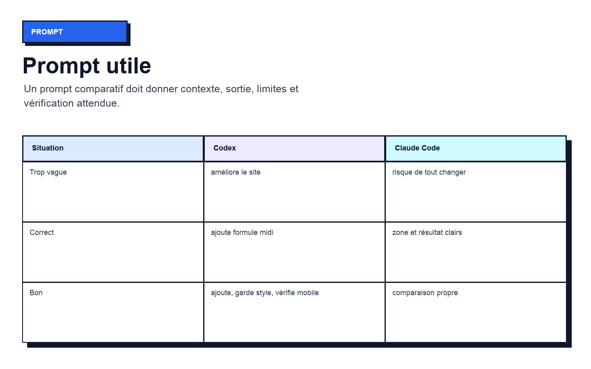
Visuel 33 · CLI · Donner une mission précise
34CLIActe 4 - Bien utiliser Codex CLI
CLI
Limiter les fichiers touchés
Codex peut parfois proposer plus que nécessaire. Si la tâche est petite, limitez les fichiers ou les zones. Cela rend le diff plus facile à relire.
Codex est l’outil principal de cette étape. Il sert à comprendre, organiser, modifier ou relire un projet selon le contexte.
Claude Code
Claude Code sert ici de repère de comparaison. Il a déjà été vu avant, donc on ne refait pas son installation.
Tip
Limiter n’empêche pas Codex de travailler ; ça l’aide à rester utile.
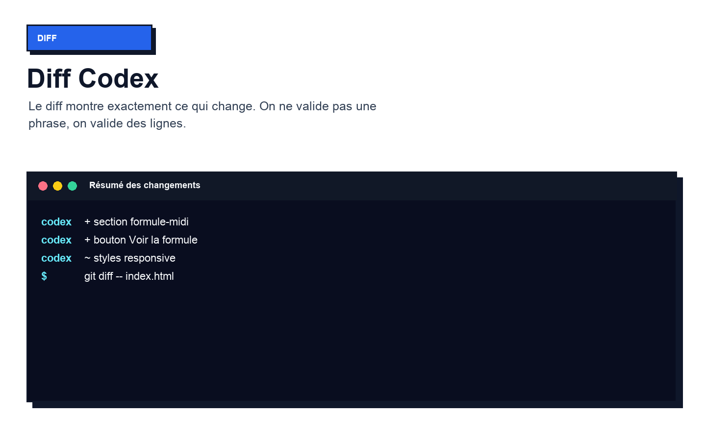
Visuel 34 · CLI · Limiter les fichiers touchés
35CLIActe 4 - Bien utiliser Codex CLI
Lire les changements proposés
Lire un diff ne demande pas de tout comprendre. Regardez les fichiers touchés, les titres ajoutés, les suppressions et les zones hors mission. C’est déjà un bon contrôle.
Action terrain
Demandez : `Résume le diff fichier par fichier, sans phrase marketing.`
À vérifier
Vous savez ce qui a changé et pourquoi.
Visuel 35 · CLI · Lire les changements proposés
Côté Codex
Codex est l’outil principal de cette étape. Il sert à comprendre, organiser, modifier ou relire un projet selon le contexte.
Côté Claude Code
Claude Code sert ici de repère de comparaison. Il a déjà été vu avant, donc on ne refait pas son installation.
Un diff que vous ne comprenez pas doit être expliqué avant validation.
36CLIActe 4 - Bien utiliser Codex CLI
Comprendre les permissions
Les permissions servent à contrôler les actions : lecture, édition, commandes, réseau ou accès sensible. Plus une action est risquée, plus la permission doit être lue calmement.
Action + preuve
Si Codex demande une permission, lisez l’action exacte avant d’accepter.
Vous savez ce que vous autorisez.
Visuel 36 · CLI · Comprendre les permissions
Codex
Codex est l’outil principal de cette étape. Il sert à comprendre, organiser, modifier ou relire un projet selon le contexte.
Claude Code
Claude Code sert ici de repère de comparaison. Il a déjà été vu avant, donc on ne refait pas son installation.
Tip terrain
Une permission n’est pas une gêne. C’est un garde-fou.
37CLIActe 4 - Bien utiliser Codex CLI
Lancer une commande de test
Cette partie montre comment parler au CLI : plan, lecture, mission précise, diff, commandes, tests, Git et résumé.
Ce qui se passe
Codex peut proposer une commande pour vérifier : build, test, lint ou ouverture locale. La commande doit être comprise avant d’être lancée.
Action terrain
Demandez : `Explique cette commande en français simple avant de la lancer.`
Preuve attendue
La commande a un rôle clair et un résultat attendu.
Tip simple
Une commande inconnue ne doit pas être lancée par automatisme.
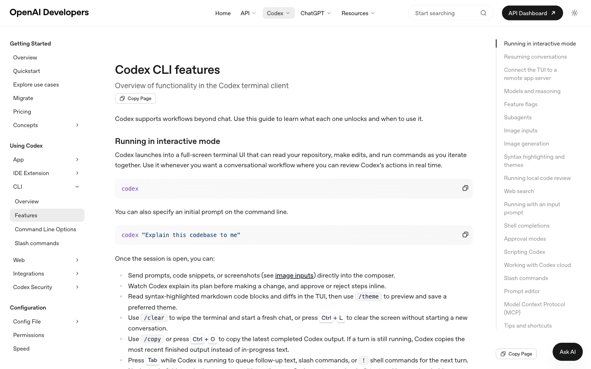
Visuel 37 · CLI · Lancer une commande de test
38CLIActe 4 - Bien utiliser Codex CLI
Visuel 38 · CLI · Vérifier avec Git
Vérifier avec Git
Git donne une vue fiable des changements. `git status` montre les fichiers modifiés ; `git diff` montre le détail. Ces deux commandes complètent la réponse Codex.
Le geste à faire
Après action : `git status --short`, puis relisez le diff important.
Côté Codex
Codex est l’outil principal de cette étape. Il sert à comprendre, organiser, modifier ou relire un projet selon le contexte.
Côté Claude Code
Claude Code sert ici de repère de comparaison. Il a déjà été vu avant, donc on ne refait pas son installation.
Les fichiers modifiés correspondent à la mission.
39CLIActe 4 - Bien utiliser Codex CLI
Bloc pratique à copier
Refuser une action risquée
Un bon usage de Codex inclut le refus. Si la proposition touche trop de fichiers, installe une dépendance inutile ou change le style global, réduisez la mission.
Côté Codex
Codex est l’outil principal de cette étape. Il sert à comprendre, organiser, modifier ou relire un projet selon le contexte.
Côté Claude Code
Claude Code sert ici de repère de comparaison. Il a déjà été vu avant, donc on ne refait pas son installation.
Bloc pratique
Écrivez : `Stop. Reviens à une correction limitée. Ne touche pas aux autres fichiers.`
Vérification :
La session revient à une action contrôlable.
Tip :
Refuser tôt coûte moins cher que corriger tard.
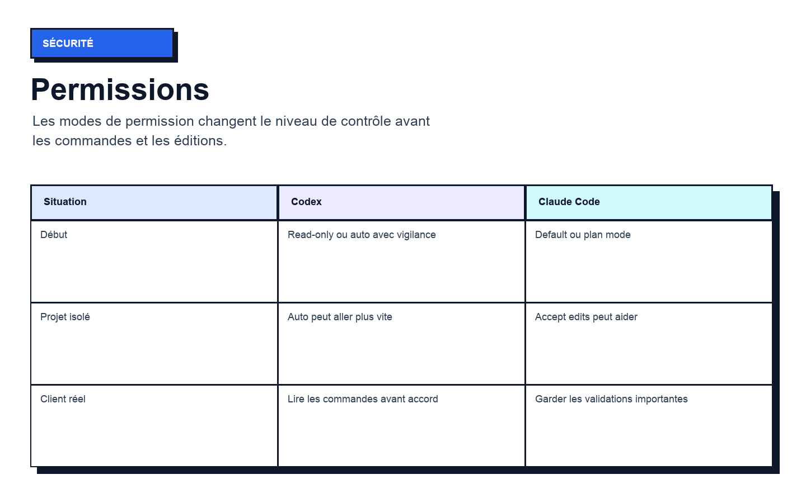
Visuel 39 · CLI · Refuser une action risquée
40CLIActe 4 - Bien utiliser Codex CLI
CLI
Résumer la session
À la fin d’une session terminal, demandez un résumé. Il doit dire ce qui a été demandé, ce qui a changé, ce qui a été vérifié et ce qui reste à faire.
Action
Demandez : `Résumé final en 6 lignes : objectif, fichiers, diff, tests, limite, prochaine étape.`
Preuve
Vous pouvez reprendre la session sans relire toute la conversation.
Codex
Codex est l’outil principal de cette étape. Il sert à comprendre, organiser, modifier ou relire un projet selon le contexte.
Claude Code
Claude Code sert ici de repère de comparaison. Il a déjà été vu avant, donc on ne refait pas son installation.
Tip
Un résumé clair transforme une session longue en trace utile.
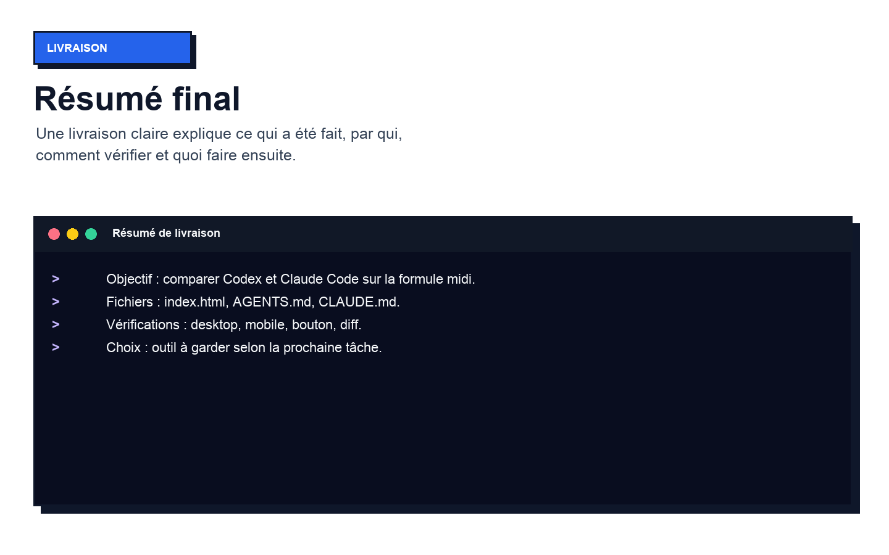
Visuel 40 · CLI · Résumer la session
41ProjetActe 5 - Travailler sur un projet
Choisir un dossier propre
Un dossier propre aide Codex à répondre juste. Si le dossier contient de vieux tests, des secrets ou des fichiers sans rapport, le contexte devient mauvais.
Action terrain
Gardez seulement les fichiers utiles au projet de test.
À vérifier
Chaque fichier a un rôle compréhensible.
Visuel 41 · Projet · Choisir un dossier propre
Côté Codex
Codex est l’outil principal de cette étape. Il sert à comprendre, organiser, modifier ou relire un projet selon le contexte.
Côté Claude Code
Claude Code sert ici de repère de comparaison. Il a déjà été vu avant, donc on ne refait pas son installation.
Plus le dossier est clair, moins le prompt doit compenser.
42ProjetActe 5 - Travailler sur un projet
Expliquer le projet
Codex travaille mieux quand le projet a une intention claire. Un README simple suffit : objectif, fichier principal, commande de test, règles visuelles et limite de sécurité.
Action + preuve
Ajoutez ou relisez `README.md` avant de demander une action.
Codex peut comprendre le projet sans deviner.
Visuel 42 · Projet · Expliquer le projet
Codex
Codex est l’outil principal de cette étape. Il sert à comprendre, organiser, modifier ou relire un projet selon le contexte.
Claude Code
Claude Code sert ici de repère de comparaison. Il a déjà été vu avant, donc on ne refait pas son installation.
Tip terrain
Un README court peut éviter de répéter le même contexte à chaque session.
43ProjetActe 5 - Travailler sur un projet
Créer AGENTS.md
Cette partie met Codex dans un vrai dossier : règles, AGENTS.md, petite modification, vérification, revue et livraison.
Ce qui se passe
AGENTS.md est le fichier de consignes projet pour Codex. Il peut contenir le style attendu, les commandes utiles, les fichiers à éviter et les règles de livraison.
Action terrain
Créez un `AGENTS.md` court avec 5 règles maximum.
Preuve attendue
Codex peut s’appuyer sur des règles stables.
Tip simple
Un bon AGENTS.md est utile, court et orienté action.
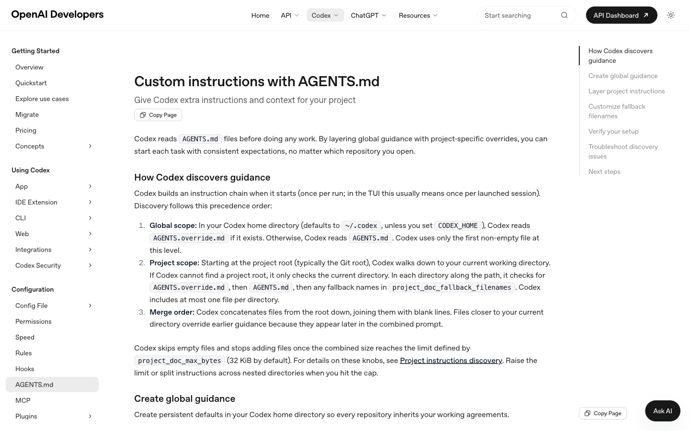
Visuel 43 · Projet · Créer AGENTS.md
44ProjetActe 5 - Travailler sur un projet
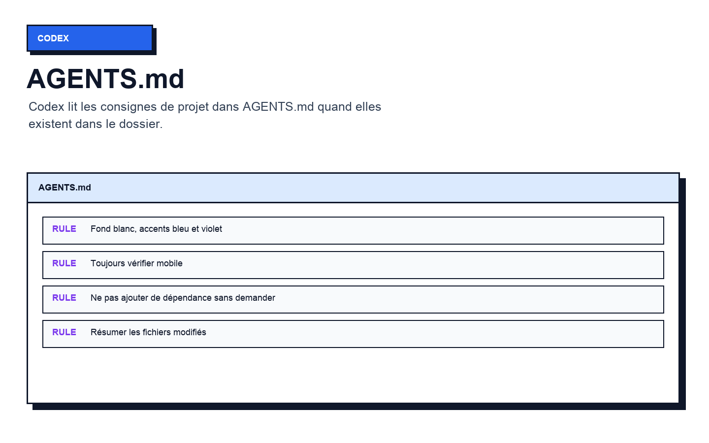
Visuel 44 · Projet · Donner les règles du projet
Donner les règles du projet
Les règles doivent être concrètes : fond blanc, accents bleu/violet, pas de dépendance sans demande, vérifier mobile, résumer les fichiers modifiés. Des règles vagues aident peu.
Le geste à faire
Transformez une préférence en règle vérifiable.
Côté Codex
Codex est l’outil principal de cette étape. Il sert à comprendre, organiser, modifier ou relire un projet selon le contexte.
Côté Claude Code
Claude Code sert ici de repère de comparaison. Il a déjà été vu avant, donc on ne refait pas son installation.
Codex sait quoi respecter pendant les modifications.
45ProjetActe 5 - Travailler sur un projet
Bloc pratique à copier
Demander une petite modification
La première modification doit être petite. C’est comme un test : Codex comprend-il le dossier, respecte-t-il AGENTS.md et produit-il un diff lisible ?
Côté Codex
Codex est l’outil principal de cette étape. Il sert à comprendre, organiser, modifier ou relire un projet selon le contexte.
Côté Claude Code
Claude Code sert ici de repère de comparaison. Il a déjà été vu avant, donc on ne refait pas son installation.
Bloc pratique
Demandez une correction limitée : texte, bouton, section courte ou bug simple.
Vérification :
La modification est visible et facile à contrôler.
Tip :
Petite action, preuve visible, puis seulement ensuite tâche plus large.
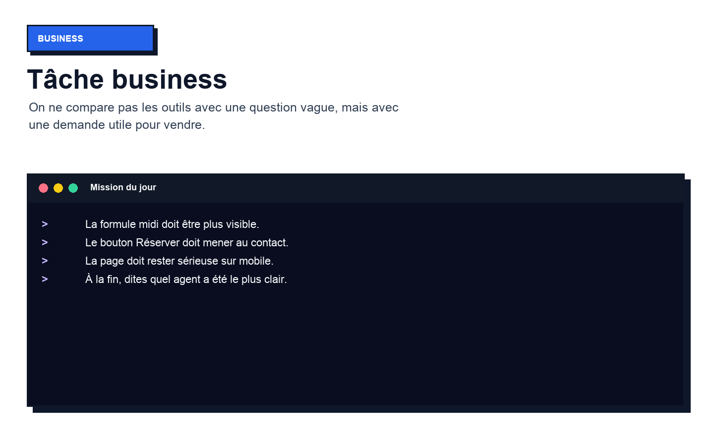
Visuel 45 · Projet · Demander une petite modification
46ProjetActe 5 - Travailler sur un projet
Projet
Vérifier le rendu
Un projet web doit être ouvert. Le terminal peut dire que tout va bien, mais le navigateur montre les vrais problèmes : espace, débordement, bouton invisible, texte trop long.
Action
Ouvrez la page locale ou la preview après modification.
Preuve
Le résultat visuel correspond à la demande.
Codex
Codex est l’outil principal de cette étape. Il sert à comprendre, organiser, modifier ou relire un projet selon le contexte.
Claude Code
Claude Code sert ici de repère de comparaison. Il a déjà été vu avant, donc on ne refait pas son installation.
Tip
Le rendu réel a toujours le dernier mot.
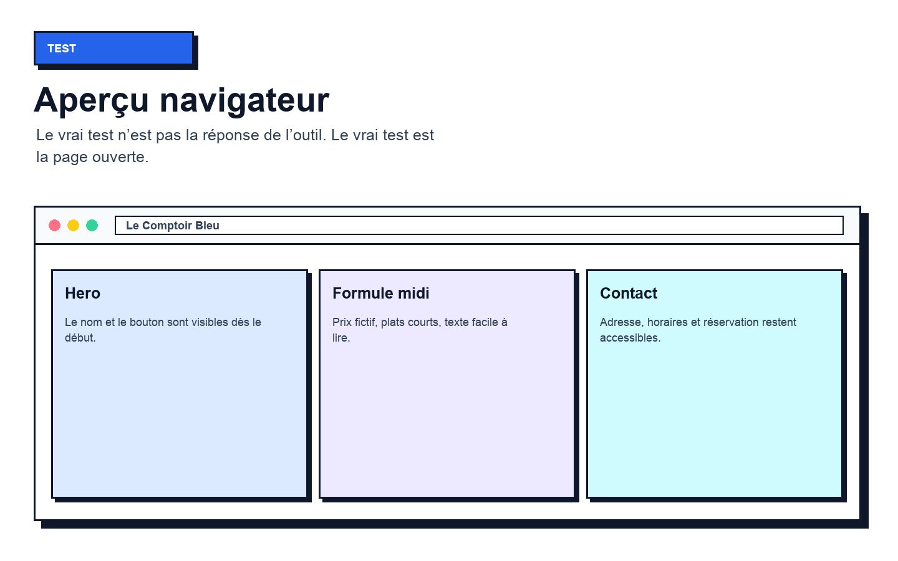
Visuel 46 · Projet · Vérifier le rendu
47ProjetActe 5 - Travailler sur un projet
Corriger une erreur
Quand une erreur apparaît, copiez le texte exact et gardez la correction petite. Codex peut diagnostiquer, mais il faut lui donner le symptôme réel.
Action terrain
Envoyez : `Voici l’erreur exacte... Explique puis propose une seule correction.`
À vérifier
La correction cible le problème sans refaire tout le projet.
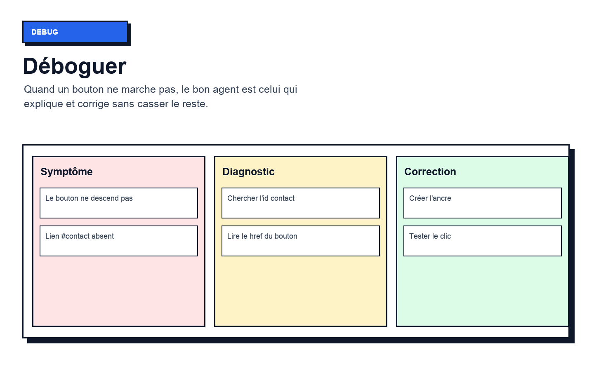
Visuel 47 · Projet · Corriger une erreur
Côté Codex
Codex est l’outil principal de cette étape. Il sert à comprendre, organiser, modifier ou relire un projet selon le contexte.
Côté Claude Code
Claude Code sert ici de repère de comparaison. Il a déjà été vu avant, donc on ne refait pas son installation.
Une erreur exacte donne une réponse plus fiable qu’une description floue.
48ProjetActe 5 - Travailler sur un projet
Demander une revue
Codex peut servir de reviewer. Il peut relire un diff, chercher les risques, proposer des tests ou signaler une incohérence. La revue ne doit pas recréer tout le travail.
Action + preuve
Demandez : `Relis ce diff et liste seulement les risques réels.`
La revue produit une liste courte et actionnable.
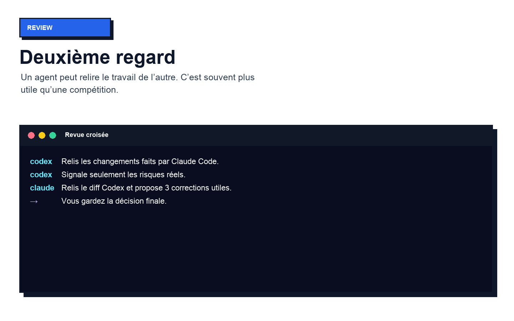
Visuel 48 · Projet · Demander une revue
Codex
Codex est l’outil principal de cette étape. Il sert à comprendre, organiser, modifier ou relire un projet selon le contexte.
Claude Code
Claude Code sert ici de repère de comparaison. Il a déjà été vu avant, donc on ne refait pas son installation.
Tip terrain
Une bonne revue sépare risque réel et préférence personnelle.
49ProjetActe 5 - Travailler sur un projet
Préparer une livraison
Cette partie met Codex dans un vrai dossier : règles, AGENTS.md, petite modification, vérification, revue et livraison.
Ce qui se passe
Avant de livrer, Codex peut préparer un résumé : fichiers, changements, vérifications, limites. Ce résumé aide à expliquer le travail sans rouvrir toute la session.
Action terrain
Demandez un résumé de livraison simple.
Preuve attendue
La livraison se comprend sans relire tout le projet.
Tip simple
Le résumé doit parler de preuves, pas seulement d’intention.
Visuel 49 · Projet · Préparer une livraison
50ProjetActe 5 - Travailler sur un projet
Visuel 50 · Projet · Garder une trace claire
Garder une trace claire
Une bonne séance Codex finit avec une trace : commit, résumé, checklist ou note de décision. Sans trace, le travail se perd vite.
Le geste à faire
Ajoutez une note finale dans README ou dans votre historique de projet.
Côté Codex
Codex est l’outil principal de cette étape. Il sert à comprendre, organiser, modifier ou relire un projet selon le contexte.
Côté Claude Code
Claude Code sert ici de repère de comparaison. Il a déjà été vu avant, donc on ne refait pas son installation.
Vous savez ce qui a été fait et ce qui reste à faire.
51PlugicielsActe 6 - Plugiciels Codex
Bloc pratique à copier
C’est quoi un plugiciel
Un plugiciel connecte Codex à un outil ou une compétence. Il peut aider avec GitHub, Gmail, Notion, Linear, Slack, spreadsheets, présentations ou autres usages selon ce qui est disponible.
Côté Codex
Codex est l’outil principal de cette étape. Il sert à comprendre, organiser, modifier ou relire un projet selon le contexte.
Côté Claude Code
Claude Code sert ici de repère de comparaison. Il a déjà été vu avant, donc on ne refait pas son installation.
Bloc pratique
Ouvrez la zone Plugiciels et regardez ce qui est activé.
Vérification :
Vous savez quels outils Codex peut utiliser dans votre espace.
Tip :
Un plugiciel activé doit servir un besoin réel.
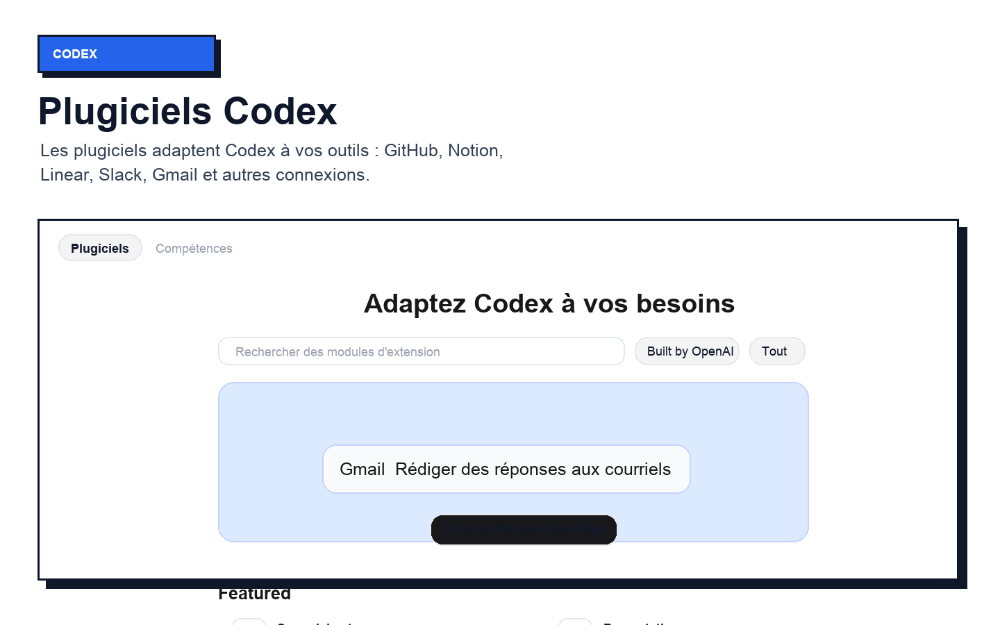
Visuel 51 · Plugiciels · C’est quoi un plugiciel
52PlugicielsActe 6 - Plugiciels Codex
Plugiciels
Pourquoi les plugiciels changent l’usage
Sans plugiciel, Codex travaille surtout avec la demande et le projet. Avec plugiciel, il peut accéder à un outil métier. Cela augmente l’utilité, mais aussi la responsabilité.
Action
Pour chaque plugiciel, demandez : `quelles données peut-il lire ou modifier ?`
Preuve
Vous comprenez le lien entre utilité et accès.
Codex
Codex est l’outil principal de cette étape. Il sert à comprendre, organiser, modifier ou relire un projet selon le contexte.
Claude Code
Claude Code sert ici de repère de comparaison. Il a déjà été vu avant, donc on ne refait pas son installation.
Tip
Plus un plugiciel est puissant, plus le cadre doit être clair.
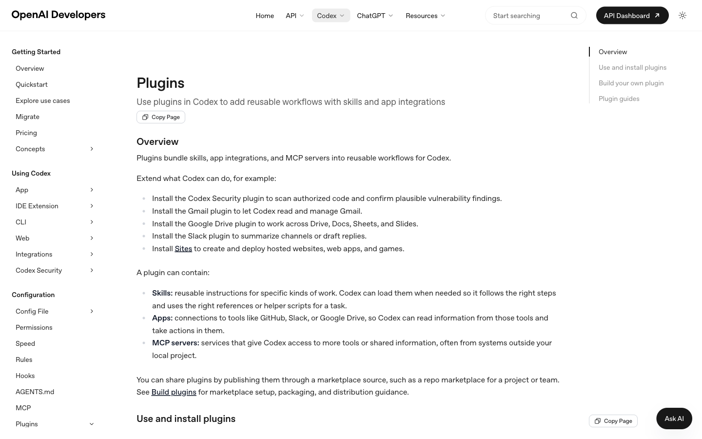
Visuel 52 · Plugiciels · Pourquoi les plugiciels changent l’usage
53PlugicielsActe 6 - Plugiciels Codex
GitHub
GitHub est utile pour relire une PR, comprendre une issue, suivre un diff, préparer un résumé ou vérifier une branche. C’est souvent l’un des plugiciels les plus utiles pour un projet code.
Action terrain
Testez une demande de revue ou de résumé de PR si GitHub est connecté.
À vérifier
Codex parle du dépôt réel, pas d’un projet imaginé.
Visuel 53 · Plugiciels · GitHub
Côté Codex
Codex est l’outil principal de cette étape. Il sert à comprendre, organiser, modifier ou relire un projet selon le contexte.
Côté Claude Code
Claude Code sert ici de repère de comparaison. Il a déjà été vu avant, donc on ne refait pas son installation.
Sur GitHub, demandez des risques et des fichiers précis.
54PlugicielsActe 6 - Plugiciels Codex
Gmail
Gmail peut servir pour lire ou rédiger des réponses liées au travail. Ce plugiciel est sensible : il touche à des messages personnels ou professionnels. Il faut donc être très clair sur le périmètre.
Action + preuve
Avant d’utiliser Gmail, définissez le type de mails autorisé et le résultat attendu.
Codex ne mélange pas une tâche code avec des messages privés.
Visuel 54 · Plugiciels · Gmail
Codex
Codex est l’outil principal de cette étape. Il sert à comprendre, organiser, modifier ou relire un projet selon le contexte.
Claude Code
Claude Code sert ici de repère de comparaison. Il a déjà été vu avant, donc on ne refait pas son installation.
Tip terrain
Un accès mail doit être cadré avant d’être utilisé.
Cette partie explique les plugiciels : à quoi ils servent, comment les choisir, et quand les éviter.
Ce qui se passe
Notion peut aider à retrouver une note, résumer une spec, transformer une décision en checklist ou préparer un document de projet. C’est utile si votre organisation vit déjà dans Notion.
Action terrain
Demandez une recherche précise : page, sujet, période ou projet.
Preuve attendue
La réponse cite le bon contexte et ne mélange pas les espaces.
Tip simple
Une recherche Notion trop large produit souvent une réponse trop large.
Visuel 55 · Plugiciels · Notion
56PlugicielsActe 6 - Plugiciels Codex
Visuel 56 · Plugiciels · Linear
Linear
Linear sert au suivi produit : tickets, priorités, bugs, projets. Codex peut aider à transformer une demande en tâche, relire un ticket ou préparer un résumé d’avancement.
Le geste à faire
Demandez à Codex de résumer un ticket ou de proposer une checklist de résolution.
Côté Codex
Codex est l’outil principal de cette étape. Il sert à comprendre, organiser, modifier ou relire un projet selon le contexte.
Côté Claude Code
Claude Code sert ici de repère de comparaison. Il a déjà été vu avant, donc on ne refait pas son installation.
La tâche Linear devient plus claire et actionnable.
57PlugicielsActe 6 - Plugiciels Codex
Bloc pratique à copier
Slack
Slack peut aider à retrouver un contexte d’équipe ou préparer une réponse. Comme Gmail, c’est sensible : il faut éviter de mélanger conversations internes et génération sans contrôle.
Côté Codex
Codex est l’outil principal de cette étape. Il sert à comprendre, organiser, modifier ou relire un projet selon le contexte.
Côté Claude Code
Claude Code sert ici de repère de comparaison. Il a déjà été vu avant, donc on ne refait pas son installation.
Bloc pratique
Limitez la demande à un canal, une période ou un sujet précis.
Vérification :
La réponse ne sort pas du contexte demandé.
Tip :
Ne demandez jamais un résumé général de tout un espace sans raison précise.
Visuel 57 · Plugiciels · Slack
58PlugicielsActe 6 - Plugiciels Codex
Plugiciels
Spreadsheets
Le plugiciel spreadsheets aide à créer, lire ou structurer des tableaux. Pour un travail business, il peut servir à organiser une liste de bugs, une checklist, un budget ou un suivi de tâches.
Action
Demandez une table simple : colonnes, lignes attendues, format final.
Preuve
Le tableau produit peut être relu et utilisé.
Codex
Codex est l’outil principal de cette étape. Il sert à comprendre, organiser, modifier ou relire un projet selon le contexte.
Claude Code
Claude Code sert ici de repère de comparaison. Il a déjà été vu avant, donc on ne refait pas son installation.
Tip
Un tableau utile commence par des colonnes bien nommées.
Visuel 58 · Plugiciels · Spreadsheets
59PlugicielsActe 6 - Plugiciels Codex
Presentations
Le plugiciel presentations aide à créer ou structurer un support. Codex peut transformer un résumé technique en plan de slides ou en contenu plus clair.
Action terrain
Donnez le public, le nombre de slides et le niveau de détail attendu.
À vérifier
La présentation répond à un objectif clair.
Visuel 59 · Plugiciels · Presentations
Côté Codex
Codex est l’outil principal de cette étape. Il sert à comprendre, organiser, modifier ou relire un projet selon le contexte.
Côté Claude Code
Claude Code sert ici de repère de comparaison. Il a déjà été vu avant, donc on ne refait pas son installation.
Une bonne slide explique une idée, pas cinq.
60PlugicielsActe 6 - Plugiciels Codex
Activer ou éviter un plugiciel
Activez un plugiciel quand il aide directement la tâche. Évitez-le quand il ajoute du bruit, touche des données sensibles ou donne à Codex un accès inutile.
Action + preuve
Pour chaque plugiciel, notez : besoin, accès, risque, preuve attendue.
Le plugiciel utilisé a une vraie raison.
Visuel 60 · Plugiciels · Activer ou éviter un plugiciel
Codex
Codex est l’outil principal de cette étape. Il sert à comprendre, organiser, modifier ou relire un projet selon le contexte.
Claude Code
Claude Code sert ici de repère de comparaison. Il a déjà été vu avant, donc on ne refait pas son installation.
Tip terrain
Le meilleur plugiciel est parfois celui qu’on laisse désactivé.
61AutomatiserActe 7 - Automatisations Codex
C’est quoi une automatisation
Cette partie explique les automatisations : quand elles servent, comment les cadrer et pourquoi il faut les vérifier avant de les laisser tourner.
Ce qui se passe
Une automatisation Codex lance un travail de façon programmée ou récurrente. Elle peut gérer un bilan, une revue, une surveillance ou une tâche répétitive sans tout relancer à la main.
Action terrain
Repérez l’écran Automatisations et les options de création.
Preuve attendue
Vous savez distinguer une demande ponctuelle d’une tâche répétée.
Tip simple
Automatiser trop tôt répète parfois une mauvaise méthode.
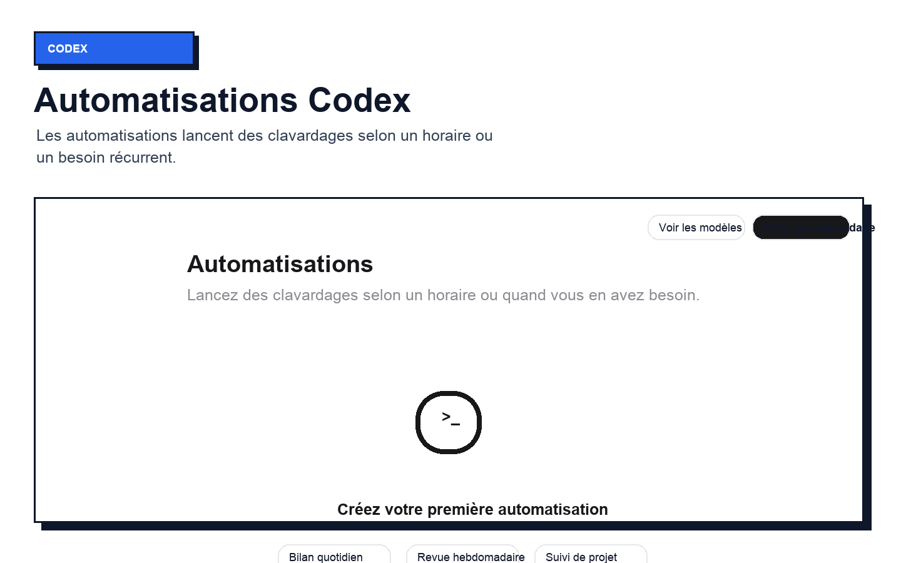
Visuel 61 · Automatiser · C’est quoi une automatisation
62AutomatiserActe 7 - Automatisations Codex
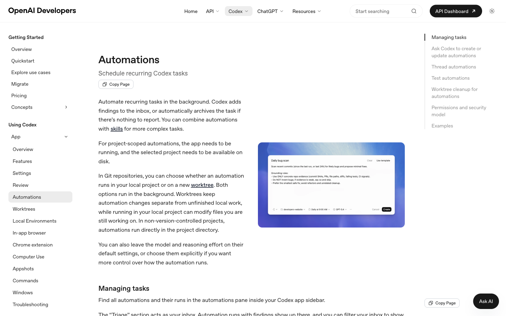
Visuel 62 · Automatiser · Demande simple ou automatisation
Demande simple ou automatisation
Une demande simple sert une fois. Une automatisation revient selon un rythme. Si la tâche n’est pas encore claire à la main, elle n’est pas prête à être automatisée.
Le geste à faire
Avant d’automatiser, faites la tâche une fois manuellement avec Codex.
Côté Codex
Codex est l’outil principal de cette étape. Il sert à comprendre, organiser, modifier ou relire un projet selon le contexte.
Côté Claude Code
Claude Code sert ici de repère de comparaison. Il a déjà été vu avant, donc on ne refait pas son installation.
La tâche est stable avant d’être programmée.
63AutomatiserActe 7 - Automatisations Codex
Bloc pratique à copier
Bilan quotidien
Un bilan quotidien peut résumer des changements, tickets, messages ou actions du jour. C’est utile si le même point de suivi revient souvent.
Côté Codex
Codex est l’outil principal de cette étape. Il sert à comprendre, organiser, modifier ou relire un projet selon le contexte.
Côté Claude Code
Claude Code sert ici de repère de comparaison. Il a déjà été vu avant, donc on ne refait pas son installation.
Bloc pratique
Définissez ce que le bilan doit lire et ce qu’il doit ignorer.
Vérification :
Le bilan ne raconte pas tout, il met en avant l’utile.
Tip :
Un bon bilan a peu de rubriques et des actions claires.
Visuel 63 · Automatiser · Bilan quotidien
64AutomatiserActe 7 - Automatisations Codex
Automatiser
Revue hebdomadaire
Une revue hebdomadaire aide à prendre du recul : avancement, blocages, décisions et prochaine priorité. Codex peut préparer ce résumé si les sources sont bien cadrées.
Action
Donnez les sources autorisées et le format final.
Preuve
La revue aide à décider la suite.
Codex
Codex est l’outil principal de cette étape. Il sert à comprendre, organiser, modifier ou relire un projet selon le contexte.
Claude Code
Claude Code sert ici de repère de comparaison. Il a déjà été vu avant, donc on ne refait pas son installation.
Tip
Une revue doit finir avec une prochaine priorité.
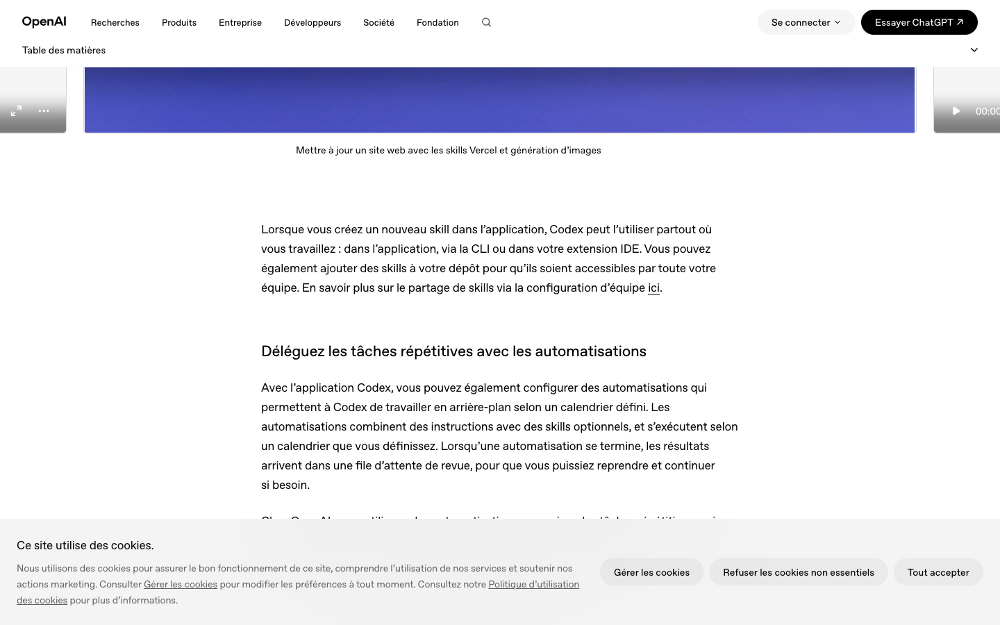
Visuel 64 · Automatiser · Revue hebdomadaire
65AutomatiserActe 7 - Automatisations Codex
Suivi de projet
Le suivi de projet peut surveiller une branche, des tickets, une PR ou une liste de tâches. Codex peut signaler ce qui demande attention.
Action terrain
Choisissez un seul projet et une fréquence raisonnable.
À vérifier
Le suivi ne génère pas trop de bruit.
Visuel 65 · Automatiser · Suivi de projet
Côté Codex
Codex est l’outil principal de cette étape. Il sert à comprendre, organiser, modifier ou relire un projet selon le contexte.
Côté Claude Code
Claude Code sert ici de repère de comparaison. Il a déjà été vu avant, donc on ne refait pas son installation.
Une automatisation bruyante sera vite ignorée.
66AutomatiserActe 7 - Automatisations Codex
Créer par clavardage
Créer par clavardage signifie décrire l’automatisation en langage simple. Mais la phrase doit rester précise : objectif, fréquence, sources, sortie et limites.
Action + preuve
Écrivez : `Chaque lundi, résume les tickets ouverts de ce projet et propose 3 priorités.`
La demande contient fréquence, source et format.
Visuel 66 · Automatiser · Créer par clavardage
Codex
Codex est l’outil principal de cette étape. Il sert à comprendre, organiser, modifier ou relire un projet selon le contexte.
Claude Code
Claude Code sert ici de repère de comparaison. Il a déjà été vu avant, donc on ne refait pas son installation.
Tip terrain
Un bon prompt d’automatisation ressemble à une mini-procédure.
67AutomatiserActe 7 - Automatisations Codex
Voir les modèles
Cette partie explique les automatisations : quand elles servent, comment les cadrer et pourquoi il faut les vérifier avant de les laisser tourner.
Ce qui se passe
Les modèles servent de point de départ. Ils aident à comprendre les usages courants : bilan, revue, suivi. Ils ne doivent pas être copiés sans adaptation.
Action terrain
Ouvrez un modèle et remplacez les éléments vagues par votre contexte.
Preuve attendue
Le modèle devient adapté à votre travail.
Tip simple
Un modèle est une base, pas une solution finale.
Visuel 67 · Automatiser · Voir les modèles
68AutomatiserActe 7 - Automatisations Codex
Visuel 68 · Automatiser · Cadrer l’automatisation
Cadrer l’automatisation
Le cadrage doit préciser ce que Codex peut lire, ce qu’il peut faire, ce qu’il ne doit pas toucher et comment vous serez averti du résultat. Sans ça, l’automatisation peut dériver.
Le geste à faire
Ajoutez une section `limites` dans la consigne.
Côté Codex
Codex est l’outil principal de cette étape. Il sert à comprendre, organiser, modifier ou relire un projet selon le contexte.
Côté Claude Code
Claude Code sert ici de repère de comparaison. Il a déjà été vu avant, donc on ne refait pas son installation.
Les limites sont visibles avant activation.
69AutomatiserActe 7 - Automatisations Codex
Bloc pratique à copier
Vérifier avant de laisser tourner
Avant d’activer une automatisation durable, lancez un test. L’objectif est de voir si le résultat est utile, court, fiable et sans accès inutile.
Côté Codex
Codex est l’outil principal de cette étape. Il sert à comprendre, organiser, modifier ou relire un projet selon le contexte.
Côté Claude Code
Claude Code sert ici de repère de comparaison. Il a déjà été vu avant, donc on ne refait pas son installation.
Bloc pratique
Faites une exécution de test et relisez le résultat comme une livraison.
Vérification :
Le premier résultat donne confiance ou montre quoi corriger.
Tip :
Ne laissez pas tourner ce que vous n’avez pas relu au moins une fois.
Visuel 69 · Automatiser · Vérifier avant de laisser tourner
70AutomatiserActe 7 - Automatisations Codex
Automatiser
Les erreurs à éviter
Les erreurs classiques : source trop large, fréquence trop élevée, sortie trop longue, action non validée, accès sensible inutile. Une automatisation doit alléger le travail, pas créer une deuxième surveillance.
Action
Avant activation, vérifiez source, fréquence, sortie, accès et validation.
Preuve
L’automatisation a un périmètre raisonnable.
Codex
Codex est l’outil principal de cette étape. Il sert à comprendre, organiser, modifier ou relire un projet selon le contexte.
Claude Code
Claude Code sert ici de repère de comparaison. Il a déjà été vu avant, donc on ne refait pas son installation.
Tip
Automatiser, c’est répéter une bonne règle. Pas compenser une règle floue.
Visuel 70 · Automatiser · Les erreurs à éviter
71ComparerActe 8 - Codex vs Claude Code
Différence simple
Codex est l’agent OpenAI avec app, terminal, cloud, plugiciels et automatisations. Claude Code est l’agent Anthropic déjà vu, très orienté terminal et travail dans un dossier. La différence se voit surtout dans la surface et les habitudes.
Action terrain
Écrivez une phrase de comparaison avec vos mots.
À vérifier
La différence est claire sans refaire l’installation Claude Code.
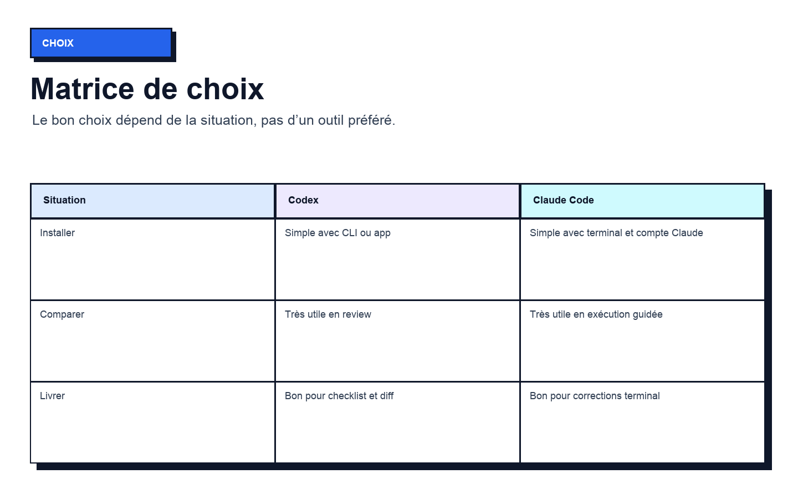
Visuel 71 · Comparer · Différence simple
Côté Codex
Codex est l’outil principal de cette étape. Il sert à comprendre, organiser, modifier ou relire un projet selon le contexte.
Côté Claude Code
Claude Code sert ici de repère de comparaison. Il a déjà été vu avant, donc on ne refait pas son installation.
Comparer n’est pas choisir pour toujours. C’est choisir pour la tâche.
72ComparerActe 8 - Codex vs Claude Code
Codex app : quand l’utiliser
Utilisez l’app Codex quand vous voulez piloter un projet, voir des conversations, gérer des plugiciels, lancer une automatisation, suivre plusieurs tâches ou travailler avec une interface plus visuelle.
Action + preuve
Classez votre tâche : pilotage, plugiciel, automatisation, suivi ou projet.
L’app est choisie pour une raison précise.
Visuel 72 · Comparer · Codex app : quand l’utiliser
Codex
Codex est l’outil principal de cette étape. Il sert à comprendre, organiser, modifier ou relire un projet selon le contexte.
Claude Code
Claude Code sert ici de repère de comparaison. Il a déjà été vu avant, donc on ne refait pas son installation.
Tip terrain
L’app est pratique quand il faut superviser plutôt que seulement taper une commande.
73ComparerActe 8 - Codex vs Claude Code
Codex terminal : quand l’utiliser
Cette dernière partie compare sans répéter : app Codex, terminal Codex, Claude Code, usage combiné et routine finale.
Ce qui se passe
Utilisez Codex CLI quand vous êtes déjà dans un dossier local et que vous voulez lire, modifier, tester ou résumer sans quitter le terminal.
Action terrain
Si le dossier est ouvert dans le terminal, lancez `codex` depuis ce dossier.
Preuve attendue
Le terminal pointe vers le bon projet.
Tip simple
Terminal = contexte local immédiat.
Visuel 73 · Comparer · Codex terminal : quand l’utiliser
74ComparerActe 8 - Codex vs Claude Code
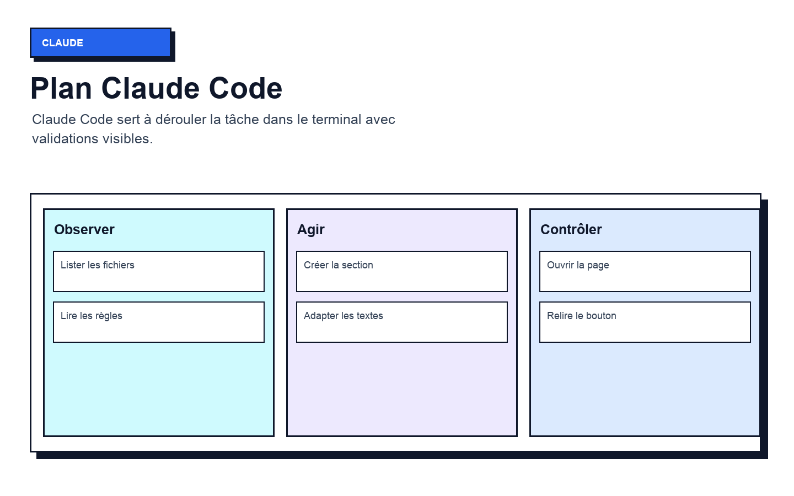
Visuel 74 · Comparer · Claude Code : quand le garder
Claude Code : quand le garder
Gardez Claude Code quand vous voulez continuer un flux Anthropic déjà installé, travailler avec ses conventions, ses commandes et sa manière de guider les changements. La séance ne le réexplique pas : elle le place en comparaison.
Le geste à faire
Pour chaque tâche, demandez : `est-ce que je veux l’écosystème Codex ou continuer avec Claude Code ?`
Côté Codex
Codex est l’outil principal de cette étape. Il sert à comprendre, organiser, modifier ou relire un projet selon le contexte.
Côté Claude Code
Claude Code sert ici de repère de comparaison. Il a déjà été vu avant, donc on ne refait pas son installation.
Le choix vient de la tâche, pas de l’habitude seule.
75ComparerActe 8 - Codex vs Claude Code
Bloc pratique à copier
Codex pour relire
Codex peut très bien servir de reviewer : relire un diff, lister les risques, proposer des tests ou vérifier une logique. C’est utile même si la modification a été faite ailleurs.
Côté Codex
Codex est l’outil principal de cette étape. Il sert à comprendre, organiser, modifier ou relire un projet selon le contexte.
Côté Claude Code
Claude Code sert ici de repère de comparaison. Il a déjà été vu avant, donc on ne refait pas son installation.
Bloc pratique
Demandez : `Relis ce diff et signale seulement les risques réels.`
Vérification :
La revue produit des points courts et vérifiables.
Tip :
Une revue utile ne réécrit pas tout.
Visuel 75 · Comparer · Codex pour relire
76ComparerActe 8 - Codex vs Claude Code
Comparer
Codex pour organiser
Codex peut aussi organiser un travail : transformer une demande floue en plan, séparer les étapes, écrire une checklist ou préparer une automatisation. C’est souvent plus utile que de lui demander directement d’agir.
Action
Demandez un plan avant action sur une tâche inconnue.
Preuve
Le plan rend le travail plus simple à lancer.
Codex
Codex est l’outil principal de cette étape. Il sert à comprendre, organiser, modifier ou relire un projet selon le contexte.
Claude Code
Claude Code sert ici de repère de comparaison. Il a déjà été vu avant, donc on ne refait pas son installation.
Tip
Organiser avant d’agir évite les gros retours arrière.
Visuel 76 · Comparer · Codex pour organiser
77ComparerActe 8 - Codex vs Claude Code
Claude Code pour agir dans le terminal
Claude Code reste très naturel dans un terminal local si vous l’avez déjà vu et installé. La vraie question n’est pas de le remplacer, mais de savoir quand Codex apporte une surface ou un accès plus utile.
Action terrain
Comparez sur une petite tâche : même dossier, même objectif, même vérification.
À vérifier
Vous voyez la différence dans la pratique, pas dans une opinion.
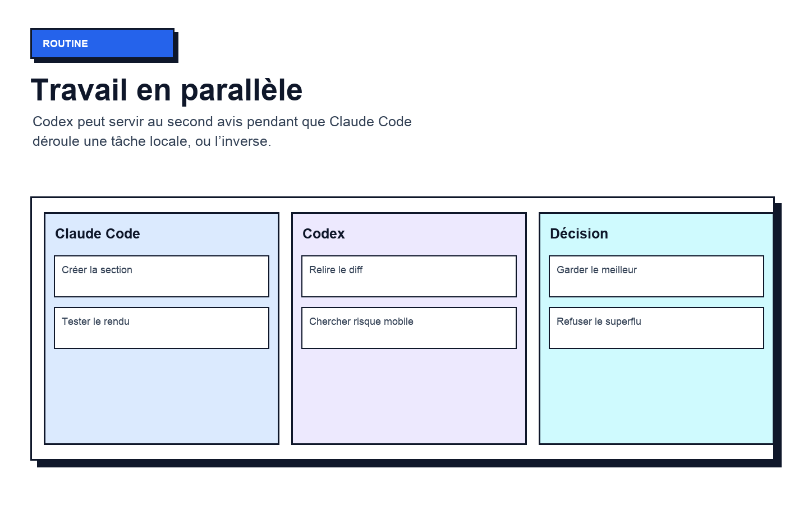
Visuel 77 · Comparer · Claude Code pour agir dans le terminal
Côté Codex
Codex est l’outil principal de cette étape. Il sert à comprendre, organiser, modifier ou relire un projet selon le contexte.
Côté Claude Code
Claude Code sert ici de repère de comparaison. Il a déjà été vu avant, donc on ne refait pas son installation.
La comparaison doit rester petite et mesurable.
78ComparerActe 8 - Codex vs Claude Code
Utiliser les deux sans doublon
Les deux outils peuvent travailler ensemble si les rôles sont séparés : l’un produit, l’autre relit ; l’un organise, l’autre applique ; l’un travaille dans l’app, l’autre dans le terminal.
Action + preuve
Définissez les rôles avant de lancer les deux.
Les deux outils ne modifient pas la même chose en même temps.
Visuel 78 · Comparer · Utiliser les deux sans doublon
Codex
Codex est l’outil principal de cette étape. Il sert à comprendre, organiser, modifier ou relire un projet selon le contexte.
Claude Code
Claude Code sert ici de repère de comparaison. Il a déjà été vu avant, donc on ne refait pas son installation.
Tip terrain
Deux agents sans rôle clair ajoutent du bruit.
79ComparerActe 8 - Codex vs Claude Code
Tableau de décision simple
Cette dernière partie compare sans répéter : app Codex, terminal Codex, Claude Code, usage combiné et routine finale.
Ce qui se passe
La décision finale doit rester simple : app Codex pour piloter, terminal Codex pour agir localement, plugiciels pour connecter des outils, automatisations pour répéter, Claude Code pour continuer le flux terminal Anthropic déjà connu.
Action terrain
Créez un tableau `situation -> outil -> preuve attendue`.
Preuve attendue
Vous savez choisir sans hésiter pendant une vraie tâche.
Tip simple
La preuve attendue est plus importante que le nom de l’outil.
Visuel 79 · Comparer · Tableau de décision simple
80ComparerActe 8 - Codex vs Claude Code
Visuel 80 · Comparer · Routine finale à garder
Routine finale à garder
La routine quotidienne tient en peu d’étapes : choisir la surface, écrire une demande précise, demander un plan si besoin, lire le diff, vérifier le résultat, résumer. Cette routine rend Codex utile au lieu de le rendre confus.
Le geste à faire
Gardez cette routine dans vos notes de séance.
Côté Codex
Codex est l’outil principal de cette étape. Il sert à comprendre, organiser, modifier ou relire un projet selon le contexte.
Côté Claude Code
Claude Code sert ici de repère de comparaison. Il a déjà été vu avant, donc on ne refait pas son installation.
Vous pouvez utiliser Codex demain sur une vraie tâche sans repartir de zéro.
Sources vérifiées · 3 juin 2026
Liens officiels à garder
Les accès, les prix et les commandes changent. Les liens ci-dessous sont volontairement visibles pour que vous puissiez vérifier avant une installation, un achat ou une formation répétée.